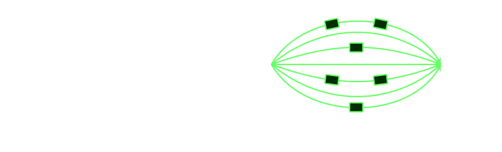
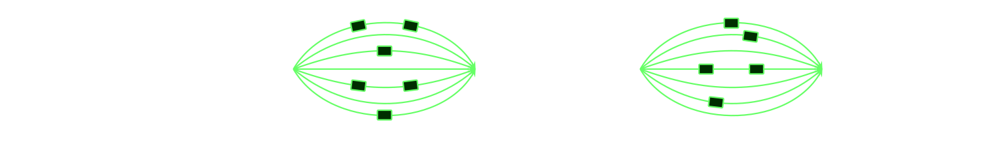

DRAFT: This article is currently being developed. As of November 18, 2026, the distribution rewrite it describes,
law_shard, is implemented in metatron for the patterns marked done in the distributed-computing reference [3];
the remaining sections are outlined.
Introduction
In Stream Ring Theory [1], a program is a term of the ring \(\langle\mathcal{C}\mathcal{F}, +, \cdot \rangle\): the \(+\) branches a stream into computations that share nothing, and the \(\cdot\) composes them in series. Read with a network in mind, the \(+\) is already a distributed computation. The summands of \(a + b\) never meet until their streams merge, and by Theorem 5 streams are atemporal, so the summands may run in any order and therefore on any machine. What a distributed system must decide is not whether a term may be split, but where the splitting must stop: the places where a stream contracts back to a single value. Those places are the reduce functions, and the stream ring states exactly when a reduce function may be pushed into the branches before it.
The statement is Theorem 19 of [1]. A reduce function \(r\) over a commutative monoid is semi-right distributive:
\[ (a + b)\,r = (a\,r + b\,r)\,r \]
The left side folds the union of two streams in one place. The right side folds each stream where it lies, then folds the two partials once more. Nothing in the right side requires the two folds to share a machine, so the right side is a distributed program: two lanes, each computing its own partial, and a final fold that brings the computation home. The fold's declared laws, monoidic and commutative, are the license; no other feature is needed.

A program may contract more than once. Every fold that declares these laws is a cut, and each cut plans the run of instructions before it. The program expands across the available machines, contracts at the fold, and starts again from the one value the fold left at home.

This article develops that reading. The first section recalls the distributive laws of the stream ring and its function subrings. The second states the shard identity, the one rewrite every distribution pattern below lowers to, and proves it from Theorems 18 and 19. The third extends it to programs with many cuts. The fourth shows that a coefficient is itself an index set, so a single value can be distributed by splitting its unrolls instead of its members. The fifth reads the menu of distribution patterns as a taxonomy of laws.
The Distributive Laws of the Stream Ring
The stream ring's function set \(\mathcal{F}\) has four logical subsets [1]: the map, filter, and flatmap functions, each of which forms a ring with unity, and the reduce functions \(\mathcal{F}_r\), which form only a near-ring. The difference is distributivity, and distributivity is exactly the question a distributed system asks.
| structure | right distributive, \((a+b)c = ac + bc\) | left distributive, \(c(a+b) = ca + cb\) |
|---|---|---|
| map, filter, flatmap rings | yes | yes |
| reduce near-ring \(\mathcal{F}_r\) (Theorem 18) | no | yes |
| monoidic reduce functions (Theorem 19) | semi: \((a+b)c = (ac+bc)c\) | yes |
For a map, a filter, or a flatmap \(f\), right distributivity says \((a + b)\,f = a\,f + b\,f\): an elementwise function applied to a merged stream is the merge of its applications to the parts. Each part may be processed where it lies. This is why a floatable run, any chain of such functions, can be replicated into every branch with no coordination (Theorem 6: the coefficient floats through non-reduce chains).

A reduce function is not right distributive: \((a+b)\,r\) produces one reduced object, while \(a\,r + b\,r\) produces two. Theorem 19 recovers the equality for a reduce function over a commutative monoid \(\langle X, \oplus \rangle\), at the cost of one more fold: the two reduced objects are themselves reduced. Theorems 16 and 17 name the consequence for distribution: reduce functions are temporal, and coefficients stop floating at them, so a reduce function is the one synchronization point of a program, its cut.

Theorem 19 drawn as streams: on the left one fold meets the merged stream; on the right each branch folds its own stream, and the two partials are folded once more.
| theorem | statement | for distribution |
|---|---|---|
| Theorem 5 | streams are atemporal | no order of apply or merge is required: placement is free |
| Theorem 6 | \(ca \cdot 1b = 1a \cdot 1b \cdot c1\) | elementwise work is independent: replicate it |
| Theorem 16 | reduce functions are temporal | the fold is the one synchronization point |
| Theorem 17 | \(c1 \cdot 1a \neq 1a \cdot c1\) for \(a \in \mathcal{F}_r\) | floating stops at a reducer: the fold is the cut |
| Theorem 18 | \(\langle\mathcal{F}_r, +, \cdot\rangle\) is a near-ring | a reducer distributes over a fan-out after it |
| Theorem 19 | \((a+b)c = (ac+bc)c\) for a monoidic \(c\) | a commutative monoid fold splits and re-applies |
| Theorem 21 | \(\langle\mathcal{F}_r, \cdot\rangle\) is functionally closed | a fold after a fold is a fold: combiners stay reducers |
The Shard Identity
Definition (cut). A cut is a reduce function \(r\) whose partial results recombine through a reduce function
\(C(r)\), its combiner, that is monoidic and commutative. A fold that declares those laws itself is its own combiner,
\(C(r) = r\) (sum, prod); a fold defined by a derivation recombines through the fold that defines it
(\(\texttt{count} = \texttt{map}(1) \cdot \texttt{sum}\), so \(C(\texttt{count}) = \texttt{sum}\)).
Proposition (the shard identity). Let the seed \(s = s_1 + \cdots + s_k\) be partitioned across \(k\) places, let \(f\) be a floatable run, and let \(r\) be a cut. Then
\[ s\,f\,r = (s_1\,f\,r + \cdots + s_k\,f\,r)\;C(r). \]
Proof sketch. Because \(f\) is a product of map, filter, and flatmap functions, each of which is right distributive, \((s_1 + \cdots + s_k)\,f = s_1 f + \cdots + s_k f\). Applying Theorem 19 to the cut, by induction on \(k\), \((s_1 f + \cdots + s_k f)\,r = (s_1 f r + \cdots + s_k f r)\,r\). When \(r\) is defined through a derivation, the same steps go through its definition, and the outer fold is \(C(r)\). ◻
Read right to left, the identity is a program for \(k\) machines: each place \(p_i\) computes \(s_i\,f\,r\), one partial per
place travels home, and the home machine computes \(C(r)\) over the partials. In mtron the right side is a branch keyed
by place. The examples in this article run over two places. harvest, an instruction from Dr. Stynx's boot file
drstynx.boot.mtron, spawns a sibling JVM on this machine for each
integer it is given and dials each one as a ws_client peer; the category instset, which holds law_shard, is
imported out of view.
mtron> harvest?rec<=int{*}(uri{?}::T){
spawn?uri<=int(<//localhost:${_ + 1111}/${_}>,<//${_}>,*0).
-<[host=>_].as(ws_client::T).barrier()>>host.>-[,].as(rec::T)}@harvest
...
mtron> {0,1}.harvest()
...
The serial program
mtron> {1,2,3,4}.plus(1).sum()
==>14
is rewritten by law_shard, and explain() prints the code the machine runs:
mtron> {1,2,3,4}.plus(1).sum().explain()>>format
==>"""
op dom rng args f desc c_dom c_rng
branch noobj{0}::T #{*}::T [ws://localhost:1111=>start?hop=0({1,3}).plus(1).sum(), <j> standard {0} {*}
ws://localhost:1112=>start?hop=0({2,4}).plus(1).sum()]
sum #{*}::T #::T <?> reducer {*} {1}
"""
The branch is keyed by the two places. Each lane starts from its share of the seed, {1,3} or {2,4} (the members
are dealt in turn), and runs the floatable run and the fold where it lands; ?hop=0 tells the peer not to plan the lane
again. The sum after the branch is \(C(r)\). A fold defined by a derivation recombines through the fold that defines
it: each place counts its share, and home sums the counts.
mtron> {1,2,3,4}.count().explain()>>format
==>"""
op dom rng args f desc c_dom c_rng
branch noobj{0}::T #{*}::T [ws://localhost:1111=>start?hop=0({1,3}).count(), <j> standard {0} {*}
ws://localhost:1112=>start?hop=0({2,4}).count()]
sum #{*}::T #::T <?> reducer {*} {1}
"""
The rewrite never names a combiner: it reads the fold's declared laws and computes one.
[To be written: the computed combiner in full (self-combining, by derivation, pointwise for a keyed fold), and what a fold that declares neither law does (it stays home).]
Chains of Cuts
A program with several cuts is planned cut by cut. Each cut plans the floatable run before it, never reaching back past the cut before that, and the instructions between a cut and the next run stay home. Written as a pattern over a chain,
\[ [\,\textit{initial},\; \{+\}[\,\{*\}\textit{home},\; \{*\}\textit{floatable},\; \textit{cut}\,],\; \{*\}\textit{tail}\,] \]
each bracketed group is one expansion and one contraction (figure 2). After a cut the program holds one object, the
value the fold answered, so the run after it has nothing to deal; what it has instead is the multiplicity in its own
coefficients, which the next section treats. The instructions that stay home between two cuts keep that one object as
long as each hands on at most one object for the one it takes: an effect like print stays home, and the run after it
still ships.
mtron> {1,2,3,4,5}.plus(1).sum().{0,3}plus(1).sum()
==>86
mtron> {1,2,3,4,5}.plus(1).sum().{0,3}plus(1).sum().explain()>>format
==>"""
op dom rng args f desc c_dom c_rng
branch noobj{0}::T #{*}::T [ws://localhost:1111=>start?hop=0({1,3,5}).plus(1).sum(), <j> standard {0} {*}
ws://localhost:1112=>start?hop=0({2,4}).plus(1).sum()]
sum #{*}::T #::T <?> reducer {*} {1}
branch int{*}::T #{*}::T [ws://localhost:1111=>{0,2}plus?hop=0(1).sum(), <j> standard {*} {*}
ws://localhost:1112=>{3}plus?hop=0(1).sum()]
sum #{*}::T #::T <?> reducer {*} {1}
"""
The plan has a branch and a sum for each cut. The first deals the seed. The second has one object, the 20 the first
fold answered, so it copies that object to both places and splits the run's own span, \([0,2]\) to one and \([3,3]\) to the
other (the next section reads a coefficient as an index set). The profile counts what the home machine ran, the
expansion and contraction of each cut in figure 2, and lists law_shard among the rewrite rules:
mtron> {1,2,3,4,5}.plus(1).sum().{0,3}plus(1).sum().profile()>>format
==>"""
stage min (ms) max (ms)
rewrite 17.325 20.683
resolve 22.954 26.175
apply 87.604 138.398
insts 4
resolve sub-stages (avg ms):
inst-resolve 6.442 61.2%
generic-binding 3.686 35.0%
inst-composition 0.401 3.8%
rewrite rules:
branch_factor law_poset law_shard law_monoidic theory_unit_removal derivation_contraction
insts.in 80 80 80 80 80 80
insts.out 80 80 80 80 80 80
time(ms) 94.736 11.828 4.838 4.714 2.768 2.659
TOTAL inst.in 4 inst.out 4 time(ms) 139.990
apply sub-stages (avg ms):
split 0.009 0.0%
apply 51.912 100.0%
next 0.007 0.0%
per-instruction (per iteration):
branch sum branch sum
in.monad 0 1 0 0
in.coeff 0 2 0 0
out.monad 1 1 1 1
out.coeff 2 1 2 1
time(ms) 51.912 0.000 0.000 0.000
flow monads=25 coeff-sum=30 compression=1.20 processors=10
cache hits=357014 misses=5 hit=100.0%
"""
[To be written: the home instructions in general (what a contract must state for one object to survive them), and the
leading flatmapper: with one object and no index set, merge() unrolls the lst a fold answered at home, and the rest of
the run deals its members.]
mtron> {1,2,3,4,5}.plus(10).order(neg()).merge().plus(1).sum()
==>70
mtron> {1,2,3,4,5}.plus(10).order(neg()).merge().plus(1).sum().explain()>>format
==>"""
op dom rng args f desc c_dom c_rng
branch noobj{0}::T #{*}::T [ws://localhost:1111=>start?hop=0({1,3,5}).plus(10).order(neg()), <j> standard {0} {*}
ws://localhost:1112=>start?hop=0({2,4}).plus(10).order(neg())]
kmerge #{*}::T #{*}::T [neg()] <j> reducer {*} {*}
merge #{*}::T #{*}::T [noobj] <j> flatmapper {*} {*}
branch int{*}::T #{*}::T [ws://localhost:1111=>plus?hop=0(1).sum(), <j> standard {*} {*}
ws://localhost:1112=>plus?hop=0(1).sum()]
sum #{*}::T #::T <?> reducer {*} {1}
"""
order is a cut too, and its computed combiner is kmerge, a k-way merge: each place sorts its share, and home merges
the sorted partials. The merge that unrolls the sorted lst stays home, and the run after it deals the members to the
places again.
Coefficients as Index Sets
A coefficient is a second place to find parallelism [2]. A span range is a sum of independent terms, \(a^{[m,n]} = \sum_{k=m}^{n} a^k\), so a run over one object can be split by its exponent: each place takes the whole object and a contiguous share of the unrolls.
mtron> start(0).{0,3}plus(1).sum()
==>6
mtron> start(0).{0,3}plus(1).sum().explain()>>format
==>"""
op dom rng args f desc c_dom c_rng
branch noobj{0}::T #{*}::T [ws://localhost:1111=>start?hop=0(0).{0,2}plus(1).sum(), <j> standard {0} {*}
ws://localhost:1112=>start?hop=0(0).{3}plus(1).sum()]
sum #{*}::T #::T <?> reducer {*} {1}
"""
Both lanes start from the same 0. The first takes the unrolls \(0\) to \(2\) and the second the unroll \(3\), written {3}:
the shares are cut by the work each costs, not by how many unrolls each holds. At home the profile shows the program
that ran, a branch and a sum, and the time spent at the branch waiting on the two partials:
mtron> start(0).{0,3}plus(1).sum().profile()>>format
==>"""
stage min (ms) max (ms)
rewrite 5.657 6.524
resolve 7.383 8.371
apply 43.566 53.736
insts 2
resolve sub-stages (avg ms):
inst-resolve 2.262 54.1%
generic-binding 1.725 41.2%
inst-composition 0.198 4.7%
rewrite rules:
branch_factor law_poset law_monoidic law_shard theory_unit_removal derivation_contraction
insts.in 40 40 40 40 40 40
insts.out 40 40 40 40 40 40
time(ms) 21.404 8.759 2.986 2.690 1.986 1.897
TOTAL inst.in 2 inst.out 2 time(ms) 51.837
apply sub-stages (avg ms):
split 0.009 0.0%
apply 36.989 99.9%
next 0.012 0.0%
per-instruction (per iteration):
branch sum
in.monad 0 1
in.coeff 0 2
out.monad 1 1
out.coeff 2 1
time(ms) 36.989 0.000
flow monads=15 coeff-sum=15 compression=1.00 processors=10
cache hits=210088 misses=5 hit=100.0%
"""
A point is an index set too. The point \(a\{p\}\) is \(p\) copies of one term, and points add across a branch, \(a\{p\} = a\{p_1\} + a\{p_2\}\) with \(p = p_1 + p_2\), so the places take even shares of the copies.

[To be written: the point's live example. Over places today a shipped lane loses its point, so the example waits on that fix.]
The same holds after a cut, where the object to copy is the fold's answer: the second branch in the chain of cuts
above copies the 20 to both places and splits the span \([0,3]\) as \([0,2]\) and \([3,3]\).
[To be written: shares chosen by work for a span (a lane walks its runs from the seed, so a share \([a,b]\) costs the \(b\) steps it walks and the \(b - a + 1\) runs it emits) and evenly for a point; why the copy needs no idempotence (the shares are disjoint); one axis per run, the seed's first.]
The Shape of a Law
The law a fold obeys fixes how it distributes, and there are only a few shapes [3]:
| law | pattern | shape | coordination |
|---|---|---|---|
| floatable (Theorem 6) | map, filter, flatmap | free: replicate the run | none |
| commutative monoid (Theorem 19) | reduce, fold | star: scatter, partial reduce, gather | one barrier |
| associative, not commutative | scan, prefix | pipeline: carry the running total | neighbor to neighbor |
| keyed product | join, group by | shuffle: partition by key, reduce, gather | key co-location |
sum, count, max, and order are one pattern, the commutative monoid fold, with different instances: the operation
is the instance, and the law is the pattern.
The Menu
Every distribution pattern metatron names is an instance of one of these laws, and the menu lists them all
[3]. A \(\checkmark\) marks a pattern law_shard
implements today; an empty status means the law holds and the lowering is not yet written. Most entries are stars,
refinements of the shard identity (A, E, G, J, K, L, H). D, S and V are orthogonal: they multiply any fan-out, through
the transport, the master's own share, and the run's own coefficients. The rest place the work (B, C, Q, P, T) or
compose the others (N, R, M, I).
| key | status | pattern | law | description |
|---|---|---|---|---|
| A | \(\checkmark\) | homomorphism shard | \(h(a \uplus b) = h(a) \oplus h(b)\) | each place folds its part; the master recombines the partials through the computed combiner |
| B | data-local shard | \(\mathrm{from}(p) = \sum_a \mathrm{from}_a(p)\) | the code moves to the data: each authority folds what it holds | |
| C | authority push-down | \(\mathrm{from} \cdot \mathrm{count} \mapsto \mathrm{native\_count}\) | B with one owner: the fold runs where the data lives, natively (Theorem 5 and a pure chain) | |
| D | \(\checkmark\) | parallel fan-out | \(\langle x\rangle(a+b) = \langle x\rangle a + \langle x\rangle b\) | the transport, not a new fold: every lane is submitted before any is awaited, so the master pays the longest round trip, not their sum |
| E | \(\checkmark\) | tree reduction | \((a+b+c+d)\cdot r = ((a\cdot r + b\cdot r)\cdot C + (c\cdot r + d\cdot r)\cdot C)\cdot C\) | each interior node re-plans its part and recombines a level |
| F | ordered fold | \(a \cdot (b \cdot c) = (a \cdot b) \cdot c\) | associativity alone: a list-partitioned fold carries the running total (streams never shard) | |
| G | \(\checkmark\) | keyed reduce | \(\mathrm{combiner}(\mathrm{group}([k \Rightarrow h])) = \mathrm{sum} \cdot \mathrm{select}([\_ \Rightarrow \mathrm{combiner}(h)])\) | partials merge by key; the combiner is pointwise, computed from the inner fold's |
| H | redundant / hedged shards | \(x \oplus x = x\) | an idempotent fold lets a part ship to several peers and every reply fold; otherwise hedge, first wins | |
| I | span/route interpreter | \(\mathrm{plan} \mapsto \mathrm{layout}\) | the infrastructure: a plan's axes lowered to a layout | |
| J | algebraic aggregates | \(\mathrm{mean} \equiv (\mathrm{sum}, \mathrm{count}) \cdot \mathrm{div}\) | pointwise tuple partials; the finalizer runs once at the master | |
| K | limit / top-k push-down | \(\mathrm{take}(k) \cdot \oplus = \mathrm{take}(k) \cdot \oplus \cdot \mathrm{take}(k)\) | each lane keeps its own top k, and the master merges and keeps k | |
| L | mergeable sketches | \(\hat h(a \uplus b) = \hat h(a) \oplus \hat h(b)\) | a sketch fold that declares its monoid theory plugs into A, E and H | |
| M | matrix multiplication | \(A \cdot (B + C) = A \cdot B + A \cdot C\) | O plus an addressed union (rows), A with the matrix sum (inner k), G over block keys (2-D) | |
| N | iterative / BSP | \(x^{*} = x \vee f(x) \vee f^{2}(x) \vee \cdots\) | a sharded superstep, repeated: the combiner is the superstep boundary | |
| O | \(\checkmark\) | broadcast constants | \(ca \cdot 1b = 1a \cdot 1b \cdot c1\) | a constant rides as an argument of the floatable run: no fan-out change (Theorem 6) |
| P | computed seeds | \([0, n) = \uplus_i \mathrm{index}_i\) | the index space is split, not the data: one constant-size message per peer | |
| Q | monad migration | \(\mathrm{authority}(m)\) | ship the monad, not the value: the continuation travels, one shard per step | |
| R | durable results | \(\mathrm{id} : \mathrm{partial} \mapsto \mathrm{address}\) | each partial is written to an address | |
| S | \(\checkmark\) | master-participates | \(\bigoplus_{i=0}^{k} a_i \cdot r\) over \(\{\mathrm{master}\} \cup \mathrm{peers}\) | the master folds its own slice, a lane at distance zero, and ships the rest |
| T | \(\checkmark\) | reference frame migration | \(\mathrm{move}(a) \ldots \mathrm{move}(b) \ldots\) | the frame moves, not the data: the tail ships as a program and the value snakes back |
| U | profile collation | \(\hat{p}(a \uplus b) = \hat{p}(a) \oplus \hat{p}(b)\) | each shard's profile ships home, and the master collates one report | |
| V | \(\checkmark\) | generative run | \(a^{[m,n]} = \sum_{k=m}^{n} a^k\) | a span range or a point is an index set: the lanes split the unrolls by work, or the copies evenly |
[To be written: the menu as a tree of these laws, a figure.]
Conclusion
NOTES:
- Distribution is a reading of the ring, not a feature: \(+\) is placement-free by Theorem 5, and the only question is where a stream must contract.
- The shard identity, \(s\,f\,r = (s_1 f r + \cdots + s_k f r)\,C(r)\), is the one rewrite: floatable runs distribute because their subrings are right distributive, and a fold distributes when Theorem 19 holds for it.
- A program expands and contracts once per cut; one object survives the home instructions between cuts.
- A coefficient is an index set: a span splits by its exponent, a point by its copies.
- [To be written: what is open — the shuffle and pipeline shapes, and the laws a fold would declare to reach them.]
References
- Rodriguez, M.A., "Stream Ring Theory," S/V Red Herring's Ship's Log: Chronicles in the Sea of Cortez, pages 10–40, Mulegé, Baja California Sur, México, February 2019.
- Rodriguez, M.A., Stynx, D.R., "A Span and Point Coefficient Algebra for Stream Rings."
- "distributed computing — the pattern menu," the mtron skill reference.